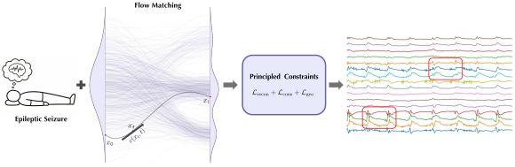
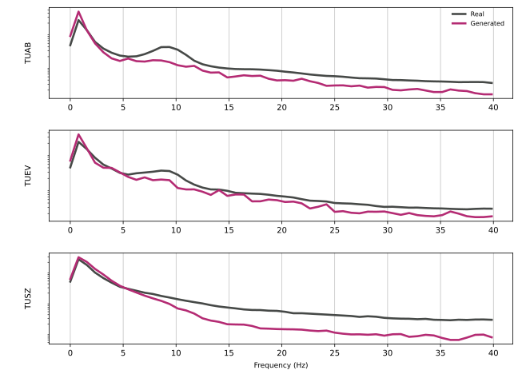
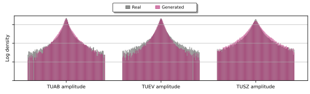

Let EEG Models Learn EEG:
Just EEG Transformer for Flow-Matching EEG Generation

Why flow matching for EEG? GANs map latent noise directly to data space, diffusion models rely on stochastic denoising dynamics, while flow matching learns a smooth time-dependent vector field whose integral curves realize optimal transport from a dispersed source to the target distribution — a natural fit for the continuous evolution of neural signals.
News
Overview
High-fidelity EEG generation is critical for alleviating data scarcity and addressing privacy constraints in large-scale neural modeling.
Existing methods formulate EEG generation via discrete denoising objectives, which inadequately reflect the inherently continuous temporal dynamics and spectral structure of neural activity.
JET is a generative framework based on conditional flow matching that models EEG as raw sequences evolving along continuous trajectories — see Method; TUAB / TUEV / TUSZ experiments in Results.
- Continuous formulation. Learn a smooth vector field that transports noise to the EEG data distribution — no discretized denoising, no domain-specific representations.
- Principled constraints. Spectral, temporal-stationarity, and signal-statistics losses keep the learned dynamics consistent with EEG.
- State of the art. Reduces TS-FID by over 40% vs. strong baselines on three large-scale benchmarks.
Method
JET Pipeline
JET generates multi-channel EEG by learning a continuous vector field v(xt, t) via flow matching, conditioned on pathological states and regularized by structure-preserving constraints that encode spectral, temporal, and statistical properties of EEG signals.

Architecture
Just EEG Transformer. Raw EEG is processed via a patch-based Transformer backbone. Input signals are tokenized, processed through stacked self-attention layers to capture spatiotemporal dependencies, and reconstructed to predict the target vector field.

Results
Quantitative Comparison
JET consistently outperforms EEG-GAN and Vanilla Diffusion across three large-scale benchmarks (TUAB, TUEV, TUSZ) on generation quality (TS-FID), conditional consistency (Sil.), and downstream utility (Δ Acc).
| Method | TUAB | TUEV | TUSZ | ||||||
|---|---|---|---|---|---|---|---|---|---|
| TS-FID↓ | Sil.↑ | Δ Acc↑ | TS-FID↓ | Sil.↑ | Δ Acc↑ | TS-FID↓ | Sil.↑ | Δ Acc↑ | |
| EEG-GAN | 324.18 | 0.786 | +0.000 | 448.65 | 0.667 | −0.004 | 274.37 | 0.891 | +0.001 |
| Vanilla Diffusion | 342.91 | 0.710 | −0.002 | 415.82 | 0.703 | +0.000 | 300.47 | 0.746 | +0.000 |
| JET (Ours) | 188.27 | 0.995 | +0.029 | 235.86 | 0.983 | +0.032 | 151.27 | 0.987 | +0.017 |
Spectral Structure
Power spectral density. JET accurately reconstructs the 1/f spectral slope and distinct oscillatory peaks, demonstrating high spectral fidelity across TUAB, TUEV, and TUSZ.

Temporal Dynamics
Temporal stationarity. Z-normalized temporal envelopes exhibit stable, non-stationary variance dynamics that mirror the natural evolution of biological signals without drift.

Amplitude Distribution
Heavy-tailed amplitude distributions. The generated signals closely match the ground-truth log-density histograms, effectively capturing the heavy-tailed distribution of EEG amplitudes across all datasets.

Population Diversity
Spectral distribution stability. The shaded percentile bands of generated spectra overlap tightly with real data, indicating that JET captures the full diversity of population-level variance.

Citation
@article{wang2026jet,
title = {Let EEG Models Learn EEG: Just EEG Transformer
for Flow-Matching EEG Generation},
author = {Wang, Yifan and Ma, Yijia and Li, Wen and You, Chenyu},
journal = {ICML},
year = {2026}
}